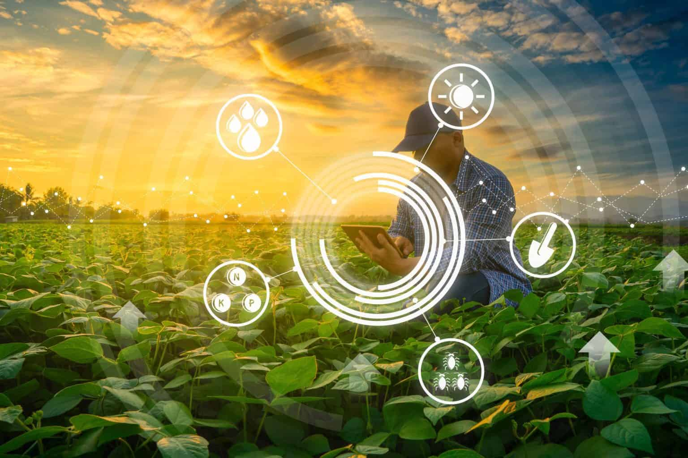
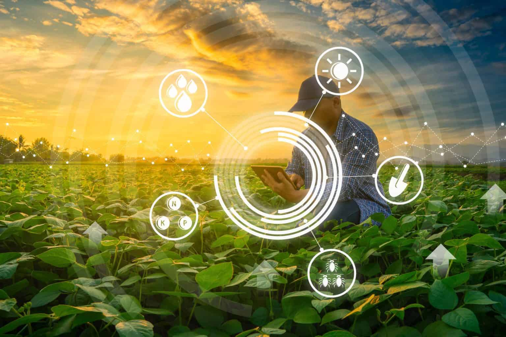

O tema do Agrinho 2025 no Paraná, "Festejando a Conexão Campo-Cidade",
celebra os 30 anos do programa destacando a interdependência entre as
áreas urbanas e rurais. A proposta é promover reflexões sobre como o
campo e a cidade se complementam, reforçando a importância da cooperação
entre esses dois espaços para um desenvolvimento mais justo, sustentável
e inovador.
Através de ações educativas, culturais e sociais, o programa busca
mostrar que todos fazemos parte de um mesmo sistema e que as escolhas e
atitudes de cada um, seja no campo ou na cidade, impactam diretamente
na qualidade de vida de todos. É um convite para conhecer, valorizar e
integrar os saberes e experiências de diferentes realidades.
IMPACTO DA URBANIZAÇÃO NA IDENTIDADE DA CULTURA RURAL
Entenda como o avanço urbano transforma modos de vida, costumes e tradições rurais no Brasil e no mundo.
URBANIZAÇÃO?
Urbanização é o processo de crescimento das cidades, tanto em tamanho quanto em número de habitantes. Ela acontece quando mais pessoas passam a viver em áreas urbanas em busca de melhores condições de vida, trabalho e acesso a serviços. Esse movimento muda paisagens, cria novas infraestruturas e transforma modos de vida, inclusive no campo, que muitas vezes sofre os reflexos desse avanço.
ÊXODO RURAL CAUSAS
O êxodo rural é a saída de pessoas do campo para as cidades. Ele acontece por vários motivos, como:
• Falta de emprego e renda no campo
• Poucas oportunidades de estudo
• Difícil acesso à saúde e serviços públicos
• Modernização das lavouras, que reduz o número de trabalhadores necessários
Com isso, muitos jovens abandonam a vida rural em busca de melhores condições nas áreas urbanas.
FALTA DE RECURSOS
Muitas comunidades rurais enfrentam a falta de recursos básicos para viver bem, como água potável, energia elétrica e saneamento. Essa carência dificulta o desenvolvimento local e afasta jovens, que buscam condições melhores nas cidades. Sem investimentos adequados, o campo fica vulnerável e perde sua força cultural e econômica.
TERRAS VALORIZADAS
Com o avanço da urbanização, muitas terras rurais passam a ser vistas como áreas valiosas para construção de casas, indústrias ou comércios. Isso eleva o preço das propriedades e pode expulsar famílias tradicionais do campo. Essa valorização nem sempre beneficia quem vive ali há gerações, causando conflitos e perda do modo de vida rural.
SERVIÇOS QUE NÃO CHEGAM
Muitas áreas rurais ficam sem acesso fácil a serviços essenciais como saúde, educação, transporte e internet. Essa ausência dificulta o dia a dia e contribui para o abandono do campo. Sem esses serviços, a vida rural perde qualidade, e as famílias acabam migrando para as cidades em busca do que falta.


 
